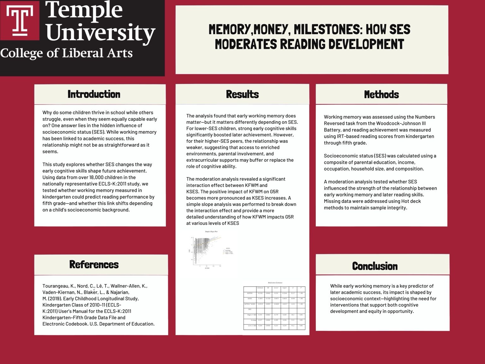

Supported Reading Pathway
- Early reading support
- Stronger reading confidence
- Continued school engagement
- Expanded opportunity pathways
Understand the Question
Memory, Money, Milestones
Explore how early working memory, socioeconomic context, and reading-focused supports can interact over time.
This tool helps show how early skills and access to support interact. It is designed to support conversations about equity, instruction, and intervention, not to predict individual outcomes.
Contrast options include a dark mode with black background and light text for low-vision comfort.
This tool shows how reading growth can be shaped by both early skills and access to support. The numbers are not test scores. They are simplified estimates that help compare different learning environments.
Explore the Model
Interactive Simulator
Choose a guided preset or adjust the controls. The live results update immediately.
Step 1 of 3
Start with the same working memory level and compare how reading growth changes across SES contexts.
You completed the guided walkthrough. You can now explore freely or reset the pathway.
Learn More
Socioeconomic status (SES) in this model is based on how the Early Childhood Longitudinal Study (ECLS-K:2011) defines it. It is a composite measure that combines parent or caregiver education, parent or caregiver occupation, and household income.
Together, these factors represent the resources and opportunities available in a child's home and school environment. SES does not measure a child's ability. It reflects the conditions that can support or shape how learning develops over time.
Educational attainment refers to the highest level of schooling completed by a parent or caregiver, such as a high school diploma, technical training, college, or an advanced degree.
Occupation refers to the type of work a caregiver has and how stable or secure that work is over time. In studies like ECLS-K:2011, occupations can be assigned scores based on national data about income, education requirements, and social standing.
Household income refers to financial resources available to a household, such as the ability to afford books, tutoring, stable housing, or flexible responses to learning needs.
These categories are simplified representations of a complex measure used in research. They are included to help explore patterns, not to define individuals.
Working memory in the ECLS-K:2011 was measured using the Numbers Reversed task from the Woodcock-Johnson III. In this task, children hear a sequence of numbers and repeat them back in reverse order. For example, if the assessor says "1-6," the child would say "6-1." The task becomes more difficult as the number sequences get longer.
In this simulator, the 1-10 slider is a simplified version of that idea. It represents how easily a child may hold and work with information while reading.
This is not a formal working memory test. It is an estimate used to explore patterns in the model.
Plain-language examples
Early reading development is not just an academic milestone. It is a key point in a larger pathway that can shape educational access, opportunity, and long-term outcomes.
Students who experience reading difficulty in the early grades may be more likely to face academic frustration, disengagement, and reduced access to advanced learning opportunities. These patterns are not fixed outcomes, but they show why early support matters.
In some communities, academic barriers intersect with disciplinary systems, economic inequality, and broader structural conditions. This connection is often discussed as part of the school-to-prison pipeline.
This simulator does not predict a child's future. It shows how early reading development, socioeconomic context, and resource support can interact to widen or narrow opportunity pathways.
Population-level pattern, not individual destiny: These pathways describe broader social patterns. A child's future is never determined by one score, one skill, or one circumstance.
Access to educational resources can significantly shape reading development, especially for students in under-resourced environments.
Research shows that when additional academic supports, such as tutoring, structured reading time, and enriched learning environments, are introduced, students can make measurable gains in reading achievement.
Recent large-scale evidence from pandemic recovery efforts further reinforces this. The Education Recovery Scorecard found that federal relief dollars helped prevent larger losses in high-poverty districts, and that districts investing more in academic interventions, such as tutoring or summer school, saw stronger achievement growth. Read the NBER working paper.
This demonstrates that while early cognitive skills like working memory matter, access to consistent, high-quality support can buffer disadvantages and shift learning trajectories.
In other words, outcomes are not fixed. Targeted interventions can meaningfully change a student's pathway.
This shows how targeted resources can reduce outcome differences between groups.
This research informs the logic behind the interactive simulator, showing how SES changes the role of early cognitive skills in reading development.
This study investigates how socioeconomic status (SES) moderates the relationship between early working memory and later academic achievement, using data from the Early Childhood Longitudinal Study, Kindergarten Class of 2010-11 (ECLS-K:2011).
A moderation analysis was conducted to assess how kindergarten fall working memory (KFWM) predicts fifth-grade reading scores (G5R) across varying levels of kindergarten SES (KSES). The results reveal a significant interaction effect, indicating that the strength of the relationship between KFWM and G5R differs by SES level.
Specifically, the predictive power of early working memory on later reading achievement diminishes for children from higher SES backgrounds, suggesting that additional resources and supports may buffer the impact of cognitive skills on academic outcomes. Conversely, for lower SES children, early cognitive skills like working memory play a more pivotal role in educational success, potentially due to fewer compensatory supports.
Compensatory supports of enriched learning environments, extracurricular support, and parental involvement mitigate reliance on early cognitive skills. These findings highlight SES as a contextual moderator that shapes academic trajectories through complex, indirect pathways rather than a simple causal link.
Keywords: Socioeconomic status (SES), Working memory (WM), Early Childhood Longitudinal Study, Moderation analysis, Interaction effect, Academic outcomes, Targeted educational interventions
This project is based on faculty-reviewed research examining how socioeconomic status (SES) moderates the relationship between early working memory and fifth-grade reading achievement.
The analysis uses data from the Early Childhood Longitudinal Study (ECLS-K:2011), which follows a large, nationally representative sample of children across multiple years.
In this study context, SES is a composite measure that includes parent or caregiver education, parent or caregiver occupation, and household income. Together, these factors describe access to resources and opportunities around learning.
Results reflect population-level patterns. They are not meant to predict any individual child's future.
Paper, poster, and presentation materials are linked here as project artifacts.

August 2024-May 2025
Analyzed how socioeconomic status (SES) influences the relationship between working memory and academic performance using national longitudinal data (ECLS-K:2011). Conducted moderation analysis to identify patterns in decision-making and outcomes. Translated findings into actionable insights with implications for behavior, resource allocation, and long-term planning. Presented findings at Temple University Symposium for Undergraduate Research and Creativity 2025.
The Maya case study is fictional and is used as an illustrative tool to help explain research patterns. It is not based on or drawn from a specific participant in the ECLS-K:2011 dataset.
These materials were developed as part of a faculty-reviewed research project. The simulator translates these findings into an interactive format to support understanding and discussion.